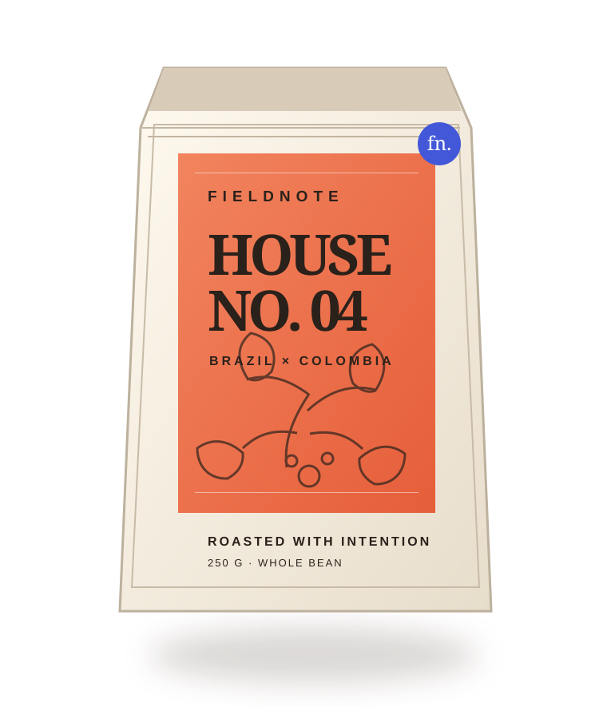
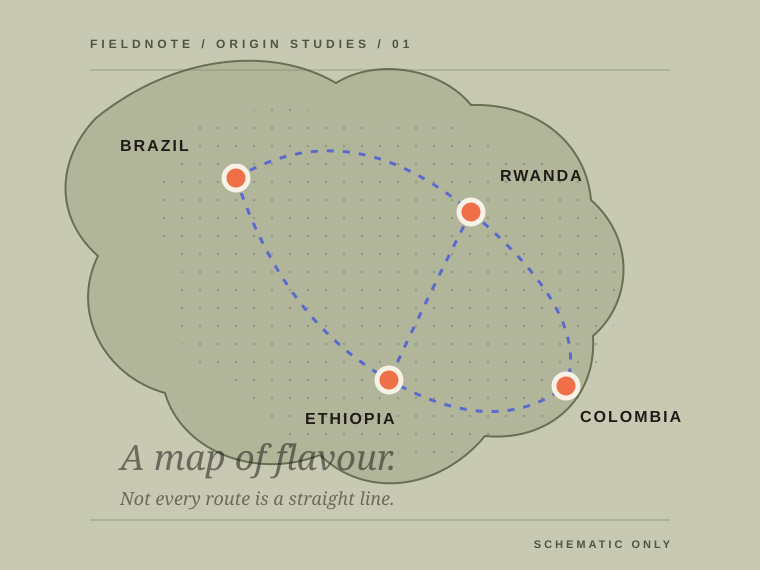

FN / 04
EVERYDAY
FIELDNOTEHOUSE
NO. 04ESPRESSO BLEND
THENO. 04ESPRESSO BLEND
EVERYDAY
BRAZIL × COLOMBIA
House No. 04
Cocoa · orange · toasted almond
R185
INDEPENDENT MICRO-ROASTERY · EST. AS A CONCEPT
Good coffee is more than a flavour note. It is a place, a process, a person and a small ritual worth slowing down for.

01 / THE CURRENT EDIT
BRAZIL × COLOMBIA
Cocoa · orange · toasted almond
RWANDA · CONCEPT LOT
Red currant · honey · black tea
ETHIOPIA · CONCEPT LOT
Bergamot · peach · jasmine
COLOMBIA · DECAF
Caramel · cocoa · plum
All prices are fictional portfolio examples in South African rand. Pack size: 250 g. Product availability and origin descriptions are illustrative.

A CUP IS A MAP02 / BEYOND THE BAG
We like the details: how a coffee was processed, what the harvest conditions were like, and why a cup tastes the way it does. Our fictional seasonal lots are designed to make those details easier to explore, not harder to decode.
Read the coffee cards ↗03 / A VERY SMALL COFFEE FINDER
Tell us how you brew and what sounds good. We will point you towards a first bag.
04 / THE FIELDNOTE CLUB
A monthly rotating selection for people who like trying something new. Choose a bag size, tell us how you brew and let the next cup find you.
05 / BREW JOURNAL
FOR CAFÉS, STUDIOS & GOOD OFFICES
Thoughtful coffee supply, practical brew support and a conversation about what your people actually like to drink.
Explore wholesale ↗